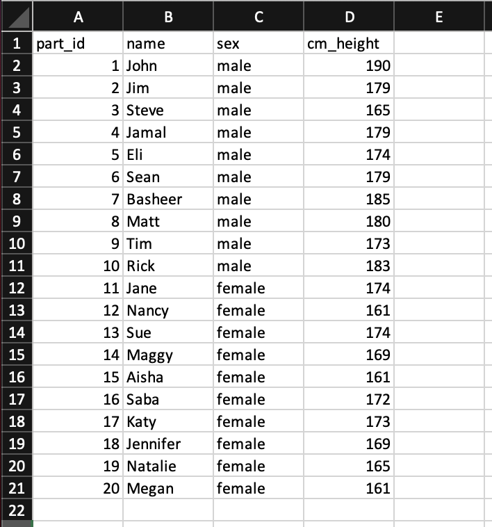
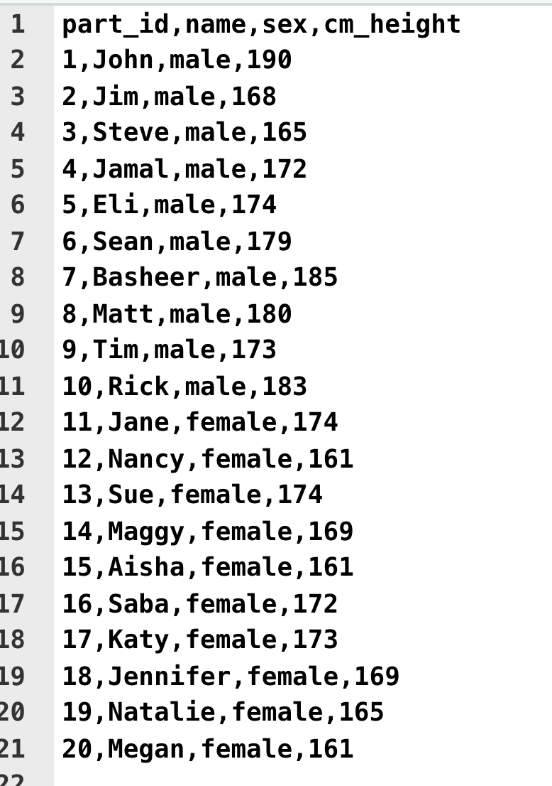

Chapter 3 Scaling
3.1 Notation
In this chapter we will use summation notation. If you are not familiar with summation notation, we present a brief overview here.
Consider a scenario where we have the IQ data for three participants We use the N symbol to represent the number of participants. Because we have three participants N = 3. The data for these participants is illustrated in Figure 3.1.
Notice how each person in the data set can be represented by the variable X: the first person by \(X_1\), the second by \(X_2\), and the third by \(X_3\). Often we refer to individuals in a data set by using the variable X accompanied by a subscript (e.g., 1, 2, 3, etc.).

FIGURE 3.1: Data for understanding summation notation
Referring to participants using the variable X and subscript is valuable because it can be used in conjunction with the sigma (i.e., \(\Sigma\)) symbol for summation. Consider the example below in which we use the summation notation to indicate that we want to add all the X values (representing IQ) for the participants. We use a lower case \(i\) to represent all possible subscript values. The notation, \(i\) = 1, below the \(\Sigma\) symbol indicates that we should start with participant 1. The notation, N, above the \(\Sigma\) symbol indicates that we should iterate \(i\) up to the value indicated by N; in this case 3, because there are three participants.
\[ \begin{aligned} \sum_{i=1}^{N} X_i &= X_1 + X_2 + X_3\\ &= 110 + 120 + 100 \\ &= 330 \end{aligned} \]
Sometimes, to simplify the notation, the numbers above and below the \(\Sigma\) symbol are omitted. Likewise, the \(i\) subscript is omitted. There is a general understanding that when these components of the notation are omitted the version of the notation above is implied.
\[ \begin{aligned} \sum{X} &= X_1 + X_2 + X_3\\ &= 110 + 120 + 100\\ &= 330 \end{aligned} \]
Calculating a mean. The full version of the notation can be used to indicate how an average/mean is calculated.
\[ \begin{aligned} \bar{X} &= \frac{\sum_{i=1}^{N} X_i}{N} \\ &= \frac{X_1 + X_2 + X_3}{3}\\ &= \frac{110 + 120 + 100}{3}\\ &= \frac{330}{3}\\ &= 110\\ \end{aligned} \]
Likewise, the concise version of the notation can be used to indicate how an average/mean is calculated.
\[ \begin{aligned} \bar{X} &= \frac{\sum{X}}{N} \\ &= \frac{X_1 + X_2 + X_3}{3}\\ &= \frac{110 + 120 + 100}{3}\\ &= \frac{330}{3}\\ &= 110\\ \end{aligned} \]
Calculating squared differences.A common task in statistics is to calculate 1) the squared difference between each person and the mean, and 2) add up those squared differences. This calculation is easily expressed with the full version of the notation.
\[ \begin{aligned} \sum_{i=1}^{N}{(X_i - \bar{X})^2} &= (X_1-\bar{X})^2 + (X_2-\bar{X})^2 + (X_3-\bar{X})^2\\ &= (110-110)^2 + (120-110)^2 + (100-110)^2\\ &= (0)^2 + (10)^2 (-10)^2 \\ &= 0 + 100 + 100 \\ &= 200 \end{aligned} \]
Likewise, the sum of the squared differences from the mean can be expressed using the concise version of the notation.
\[ \begin{aligned} \sum{(X - \bar{X})^2} &= (X_1-\bar{X})^2 + (X_2-\bar{X})^2 + (X_3-\bar{X})^2\\ &= (110-110)^2 + (120-110)^2 + (100-110)^2\\ &= (0)^2 + (10)^2 (-10)^2 \\ &= 0 + 100 + 100 \\ &= 200 \end{aligned} \]
3.2 Measurement Notation
Previously we examined the notation typically used when making inferences from a sample to a popuulation. Unfortunately, the notation used in Psychological Measurement is different - similar but different. For the purposes of this course we use the notation and fomulas below. Notice that we use N in the denominator - that is we use the population-level variance formula - even though we are working with sample data. Typically, measurement theory treats the sample as our population of interest. This difference is often a source of confusion for students.
\[ \begin{aligned} \overline{X} &= \frac{\sum{X}}{N} \\ \end{aligned} \]
\[ \begin{aligned} S^2_X &= \frac{\sum{(X - \overline{X})^2}}{N} \\ \end{aligned} \]
\[ \begin{aligned} S_X &= \sqrt{\frac{\sum{(X - \overline{X})^2}}{N}} \\ \end{aligned} \]
3.3 Data entry
We begin by entering data into Excel (or any other spreadsheet) as per below. Notice how we use the first row as a header for the column names. Once we enter the data this way we need to save it as a .CSV file (comma separated values). You do so using the Save As menu item in Excel. Once the Save window appears - you will notice a File Format pull-down buttom. Use the button to select the CSV (comma delimited) option. Indicate a file name of “data_heights.csv” and save the file.

What is a .CSV file? It’s just a text file where the columns are separated by commas. If you were to open the file in TextEdit on a Mac (or Notepad on Windows) you would see something like the image below. You don’t need to do this step - but if you did, it would just show you how the file is saved on disk.

3.4 Loading data
Begin by creating a Project in RStudio on your computer (or via RStudio Cloud). Place the “data_heights.csv” in the Project folder. If you are using R Studio Cloud this means uploading the file via the Upload button the File tab (see picture below):
Prior to loading the data we have to install the tidyverse and sjstats packages. This only needs to be done once if you are using RStudio your computer. If you are using RStudio in the Cloud you need to do it once for each project/workspace. You install these packages by typing the command below in the CONSOLE. Do NOT put these commands in your script. It will take some time to run. Don’t worry about all the text feedback you see on the screen.
From this point on place all the R commands into your script. We begin by activating the tidyverse and sjstats packages with the library() command. Then we load the data using read_csv(). Notice how use indicate missing values using the na argument of the read_csv() command; if the computer see nothing in the column or -999 it puts in a missing value place holder.
We can see the columns in the data we loaded using the glimpse() command:
## Rows: 20
## Columns: 4
## $ part_id <dbl> 1, 2, 3, 4, 5, 6, 7, 8, 9, 10, 11, 12, …
## $ name <chr> "John", "Jim", "Steve", "Jamal", "Eli",…
## $ sex <chr> "male", "male", "male", "male", "male",…
## $ cm_height <dbl> 190, 179, 165, 179, 174, 179, 185, 180,…The sex and part_id (participant identification number) columns are categorical varibles. We need to let the R know this fact. We do so by converting them to “factor” columns with the command below.
Using glimpse() again we see these columns have fct after them indicating that they are factors (i.e., categorical variables):
## Rows: 20
## Columns: 4
## $ part_id <fct> 1, 2, 3, 4, 5, 6, 7, 8, 9, 10, 11, 12, …
## $ name <chr> "John", "Jim", "Steve", "Jamal", "Eli",…
## $ sex <fct> male, male, male, male, male, male, mal…
## $ cm_height <dbl> 190, 179, 165, 179, 174, 179, 185, 180,…3.5 Viewing data
We can view all of the data we entered with the command below:
## part_id name sex cm_height
## 1 1 John male 190
## 2 2 Jim male 179
## 3 3 Steve male 165
## 4 4 Jamal male 179
## 5 5 Eli male 174
## 6 6 Sean male 179
## 7 7 Basheer male 185
## 8 8 Matt male 180
## 9 9 Tim male 173
## 10 10 Rick male 183
## 11 11 Jane female 174
## 12 12 Nancy female 161
## 13 13 Sue female 174
## 14 14 Maggy female 169
## 15 15 Aisha female 161
## 16 16 Saba female 172
## 17 17 Katy female 173
## 18 18 Jennifer female 169
## 19 19 Natalie female 165
## 20 20 Megan female 1613.6 Summary statistics
To obtain the mean for each column in the data set we use the commands below. These are fulling explained in the previous “Handling data with the tidyverse” chapter.
height_data %>%
summarise(across(.cols = where(is.numeric),
.fns = mean,
na.rm = TRUE,
.names = "mean_{col}")) %>%
as.data.frame()## mean_cm_height
## 1 173.3Likewise, we can obtain the standard deviation (population formula) using the commands below:
height_data %>%
summarise(across(.cols = where(is.numeric),
.fns = sd_pop,
.names = "sd_{col}")) %>%
as.data.frame()## sd_cm_height
## 1 8.0133.7 Converting units
3.8 Inches
In the previous sections we have examined participant heights using centimeters (cm). We can, however, express participants heights using inches. It’s a simple process to convert cm to inches - we simply divide by 2.54. If you examine the rule below you can see that 2.54 cm corresponds to 1 inch.

3.8.1 Hand calculation
We can express this conversion more formally with equations below. In this Equation we use \(X_i\) to indicate the height (in cm) of the \(i^{th}\) person in a set of N people.
\[ \begin{aligned} \text{height in inches for the ith person} = \frac{X_i}{2.54}\\ \end{aligned} \]
In the context of our data we can convert John’s height of 190 cm to inches using this process:
\[ \begin{aligned} \text{height in inches for the ith person} &= \frac{X_i}{2.54}\\ &= \frac{\text{John's height in cm}}{2.54}\\ &= \frac{190}{2.54}\\ &= 74.80315 \end{aligned} \]
Thus, John is 190 cm tall or 74.8 inches tall. Of course, John’s height has not changed because we are now expressing it in inches. All that has changed is the units we use to designate his height.
3.8.2 R calculation
We can create a new column in our data set that has the height of everyone in inches using the code below:
We can see the new column (inches) with the code below.
## part_id name sex cm_height inches_height
## 1 1 John male 190 74.80
## 2 2 Jim male 179 70.47
## 3 3 Steve male 165 64.96
## 4 4 Jamal male 179 70.47
## 5 5 Eli male 174 68.50
## 6 6 Sean male 179 70.47
## 7 7 Basheer male 185 72.83
## 8 8 Matt male 180 70.87
## 9 9 Tim male 173 68.11
## 10 10 Rick male 183 72.05
## 11 11 Jane female 174 68.50
## 12 12 Nancy female 161 63.39
## 13 13 Sue female 174 68.50
## 14 14 Maggy female 169 66.54
## 15 15 Aisha female 161 63.39
## 16 16 Saba female 172 67.72
## 17 17 Katy female 173 68.11
## 18 18 Jennifer female 169 66.54
## 19 19 Natalie female 165 64.96
## 20 20 Megan female 161 63.39height_data %>%
summarise(across(.cols = where(is.numeric),
.fns = mean,
na.rm = TRUE,
.names = "mean_{col}")) %>%
as.data.frame()## mean_cm_height mean_inches_height
## 1 173.3 68.23height_data %>%
summarise(across(.cols = where(is.numeric),
.fns = sd_pop,
.names = "sd_{col}")) %>%
as.data.frame()## sd_cm_height sd_inches_height
## 1 8.013 3.1553.9 z-scores
Recall:
\[ \begin{aligned} \overline{X} &= 173.3 \\ S_X &= 8.013114 \\ \end{aligned} \]
In general:
\[ \begin{aligned} z_i = \frac{X_i - \overline{X}}{S_X}\\ \end{aligned} \]
A specific example:
\[ \begin{aligned} z_i &= \frac{X_i - \overline{X}}{S_X}\\ &= \frac{\text{(John's height in cm)} - \overline{X}}{S_X}\\ &= \frac{190 - 173.3}{8.013114}\\ &= \frac{16.7}{8.013114}\\ &= 2.084084\\ \end{aligned} \]
## part_id name sex cm_height inches_height z_height
## 1 1 John male 190 74.80 2.08408
## 2 2 Jim male 179 70.47 0.71133
## 3 3 Steve male 165 64.96 -1.03580
## 4 4 Jamal male 179 70.47 0.71133
## 5 5 Eli male 174 68.50 0.08736
## 6 6 Sean male 179 70.47 0.71133
## 7 7 Basheer male 185 72.83 1.46011
## 8 8 Matt male 180 70.87 0.83613
## 9 9 Tim male 173 68.11 -0.03744
## 10 10 Rick male 183 72.05 1.21052
## 11 11 Jane female 174 68.50 0.08736
## 12 12 Nancy female 161 63.39 -1.53498
## 13 13 Sue female 174 68.50 0.08736
## 14 14 Maggy female 169 66.54 -0.53662
## 15 15 Aisha female 161 63.39 -1.53498
## 16 16 Saba female 172 67.72 -0.16223
## 17 17 Katy female 173 68.11 -0.03744
## 18 18 Jennifer female 169 66.54 -0.53662
## 19 19 Natalie female 165 64.96 -1.03580
## 20 20 Megan female 161 63.39 -1.53498height_data %>%
summarise(across(.cols = where(is.numeric),
.fns = mean,
na.rm = TRUE,
.names = "mean_{col}")) %>%
as.data.frame()## mean_cm_height mean_inches_height mean_z_height
## 1 173.3 68.23 -1.414e-15height_data %>%
summarise(across(.cols = where(is.numeric),
.fns = sd_pop,
.names = "sd_{col}")) %>%
as.data.frame()## sd_cm_height sd_inches_height sd_z_height
## 1 8.013 3.155 13.10 T-scores
In general:
\[ \begin{aligned} T_i = z_i \times 10 + 50\\ \end{aligned} \]
A specific example:
\[ \begin{aligned} T_i &= z_i \times 10 + 50\\ &= \text{(John's height as a z-score)} \times 10 + 50\\ &= 2.084084 * 10 + 50\\ &= 70.84084\\ \end{aligned} \]
## part_id name sex cm_height inches_height z_height
## 1 1 John male 190 74.80 2.08408
## 2 2 Jim male 179 70.47 0.71133
## 3 3 Steve male 165 64.96 -1.03580
## 4 4 Jamal male 179 70.47 0.71133
## 5 5 Eli male 174 68.50 0.08736
## 6 6 Sean male 179 70.47 0.71133
## 7 7 Basheer male 185 72.83 1.46011
## 8 8 Matt male 180 70.87 0.83613
## 9 9 Tim male 173 68.11 -0.03744
## 10 10 Rick male 183 72.05 1.21052
## 11 11 Jane female 174 68.50 0.08736
## 12 12 Nancy female 161 63.39 -1.53498
## 13 13 Sue female 174 68.50 0.08736
## 14 14 Maggy female 169 66.54 -0.53662
## 15 15 Aisha female 161 63.39 -1.53498
## 16 16 Saba female 172 67.72 -0.16223
## 17 17 Katy female 173 68.11 -0.03744
## 18 18 Jennifer female 169 66.54 -0.53662
## 19 19 Natalie female 165 64.96 -1.03580
## 20 20 Megan female 161 63.39 -1.53498
## T_height
## 1 70.84
## 2 57.11
## 3 39.64
## 4 57.11
## 5 50.87
## 6 57.11
## 7 64.60
## 8 58.36
## 9 49.63
## 10 62.11
## 11 50.87
## 12 34.65
## 13 50.87
## 14 44.63
## 15 34.65
## 16 48.38
## 17 49.63
## 18 44.63
## 19 39.64
## 20 34.65height_data %>%
summarise(across(.cols = where(is.numeric),
.fns = mean,
na.rm = TRUE,
.names = "mean_{col}")) %>%
as.data.frame()## mean_cm_height mean_inches_height mean_z_height
## 1 173.3 68.23 -1.414e-15
## mean_T_height
## 1 50height_data %>%
summarise(across(.cols = where(is.numeric),
.fns = sd_pop,
.names = "sd_{col}")) %>%
as.data.frame()## sd_cm_height sd_inches_height sd_z_height sd_T_height
## 1 8.013 3.155 1 103.11 Comparing scores
height_data %>%
summarise(across(.cols = where(is.numeric),
.fns = mean,
na.rm = TRUE,
.names = "mean_{col}")) %>%
as.data.frame()## mean_cm_height mean_inches_height mean_z_height
## 1 173.3 68.23 -1.414e-15
## mean_T_height
## 1 50## part_id name sex cm_height inches_height z_height
## 1 12 Nancy female 161 63.39 -1.53498
## 2 15 Aisha female 161 63.39 -1.53498
## 3 20 Megan female 161 63.39 -1.53498
## 4 3 Steve male 165 64.96 -1.03580
## 5 19 Natalie female 165 64.96 -1.03580
## 6 14 Maggy female 169 66.54 -0.53662
## 7 18 Jennifer female 169 66.54 -0.53662
## 8 16 Saba female 172 67.72 -0.16223
## 9 9 Tim male 173 68.11 -0.03744
## 10 17 Katy female 173 68.11 -0.03744
## 11 5 Eli male 174 68.50 0.08736
## 12 11 Jane female 174 68.50 0.08736
## 13 13 Sue female 174 68.50 0.08736
## 14 2 Jim male 179 70.47 0.71133
## 15 4 Jamal male 179 70.47 0.71133
## 16 6 Sean male 179 70.47 0.71133
## 17 8 Matt male 180 70.87 0.83613
## 18 10 Rick male 183 72.05 1.21052
## 19 7 Basheer male 185 72.83 1.46011
## 20 1 John male 190 74.80 2.08408
## T_height
## 1 34.65
## 2 34.65
## 3 34.65
## 4 39.64
## 5 39.64
## 6 44.63
## 7 44.63
## 8 48.38
## 9 49.63
## 10 49.63
## 11 50.87
## 12 50.87
## 13 50.87
## 14 57.11
## 15 57.11
## 16 57.11
## 17 58.36
## 18 62.11
## 19 64.60
## 20 70.843.12 Frame of references
3.12.1 All participants
height_data %>%
summarise(across(.cols = starts_with("cm"),
.fns = mean,
na.rm = TRUE,
.names = "mean_{col}")) %>%
as.data.frame()## mean_cm_height
## 1 173.3height_data %>%
summarise(across(.cols = starts_with("cm"),
.fns = sd_pop,
.names = "sd_{col}")) %>%
as.data.frame()## sd_cm_height
## 1 8.013For all participants
\[ \begin{aligned} \overline{X} &= 173.3 \\ S_X &= 8.013114 \\ \end{aligned} \]
\[ \begin{aligned} z_i &= \frac{X_i - \overline{X}}{S_X}\\ &= \frac{\text{(John's height in cm)} - \overline{X}}{S_X}\\ &= \frac{190 - 173.3}{8.013114}\\ &= \frac{16.7}{8.013114}\\ &= 2.084084\\ \end{aligned} \]
3.12.2 Male participants
## part_id name sex cm_height z_height
## 1 1 John male 190 2.08408
## 2 2 Jim male 179 0.71133
## 3 3 Steve male 165 -1.03580
## 4 4 Jamal male 179 0.71133
## 5 5 Eli male 174 0.08736
## 6 6 Sean male 179 0.71133
## 7 7 Basheer male 185 1.46011
## 8 8 Matt male 180 0.83613
## 9 9 Tim male 173 -0.03744
## 10 10 Rick male 183 1.21052male_height_data %>%
summarise(across(.cols = starts_with("cm"),
.fns = mean,
na.rm = TRUE,
.names = "mean_{col}")) %>%
as.data.frame()## mean_cm_height
## 1 178.7male_height_data %>%
summarise(across(.cols = starts_with("cm"),
.fns = sd_pop,
.names = "sd_{col}")) %>%
as.data.frame()## sd_cm_height
## 1 6.558For male participants
\[ \begin{aligned} \overline{X_{males}} &= 178.7 \\ S_{males} &= 6.558201 \\ \end{aligned} \]
\[ \begin{aligned} z_i &= \frac{X_i - \overline{X_{males}}}{S_{males}}\\ &= \frac{190 - 178.7}{6.558201}\\ &= \frac{11.3}{6.558201}\\ &= 1.723033\\ \end{aligned} \]
male_height_data <- male_height_data %>%
mutate(z_males_height = (cm_height - mean(cm_height))/sd_pop(cm_height) )## part_id name sex cm_height z_height z_males_height
## 1 1 John male 190 2.08408 1.72303
## 2 2 Jim male 179 0.71133 0.04574
## 3 3 Steve male 165 -1.03580 -2.08899
## 4 4 Jamal male 179 0.71133 0.04574
## 5 5 Eli male 174 0.08736 -0.71666
## 6 6 Sean male 179 0.71133 0.04574
## 7 7 Basheer male 185 1.46011 0.96063
## 8 8 Matt male 180 0.83613 0.19823
## 9 9 Tim male 173 -0.03744 -0.86914
## 10 10 Rick male 183 1.21052 0.65567